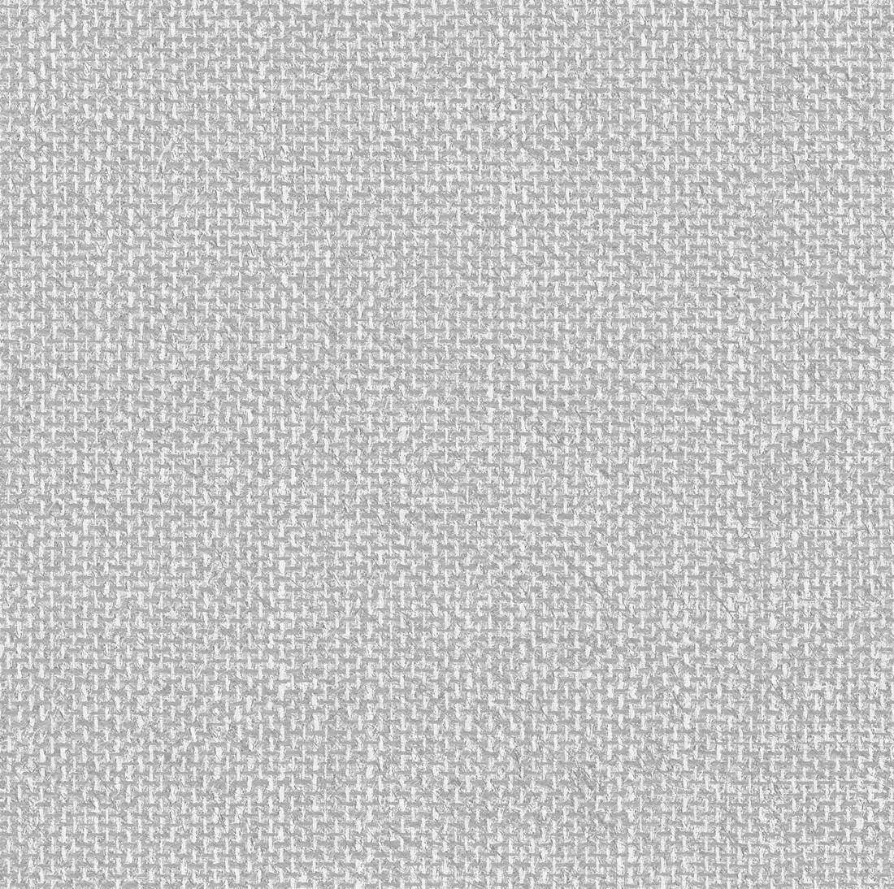
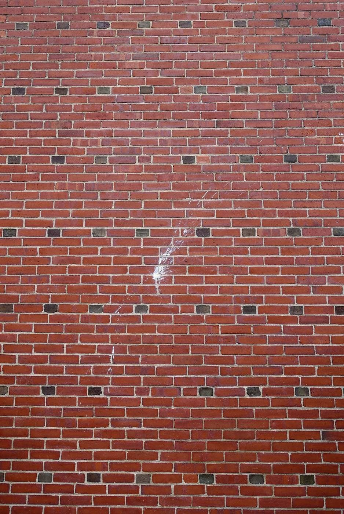

2 / 店のこと
レールとランナー
部位1と部位2。動く向きを決めるもの、すべらせるもの。



1
部位 1
レール
天井やかもいに取り付ける、細長い金属の通り道。カーテン全体の動く向きを決める部分。
2
部位 2
ランナー
レールの溝の中を転がる、小さな車輪つきの部品。蛇腹の上端をぶら下げて滑らせる。
確認できていること
お店の情報
現時点で確認できているのは、カフェであること、所在地(〒370-0069 群馬県高崎市飯塚町３８２)、Instagramアカウントの三点です。お店の歴史、こだわり、提供内容などは確認できていないため、このページには書いていません。詳しくは準備中です。
このホームページは、お店ご自身の言葉と写真に置きかえていただく前提の試作サンプルです。
なぜ、この図なのか
選んだ理由は、制作側の連想です
アコーディオンカーテンを選んだのは、制作側の連想です。制作側の連想で、お店の理念・由来とは無関係です。実際の製品の仕様を示すものではありません。
ページは五つ、部位は六つ。ページ上部の番号はページ番号で、部位の番号とは別のものです。
写真(イメージ)
写真(イメージ)


写真はイメージです。お店のものではありません。